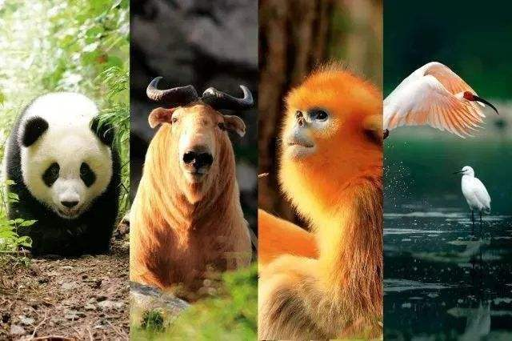
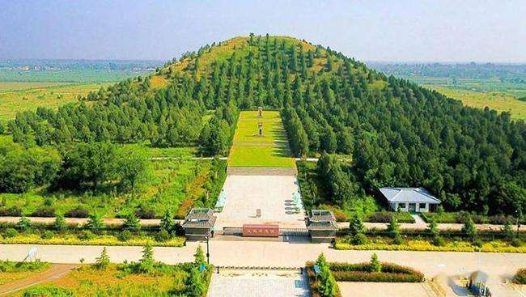
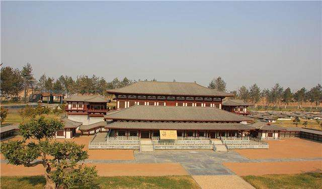
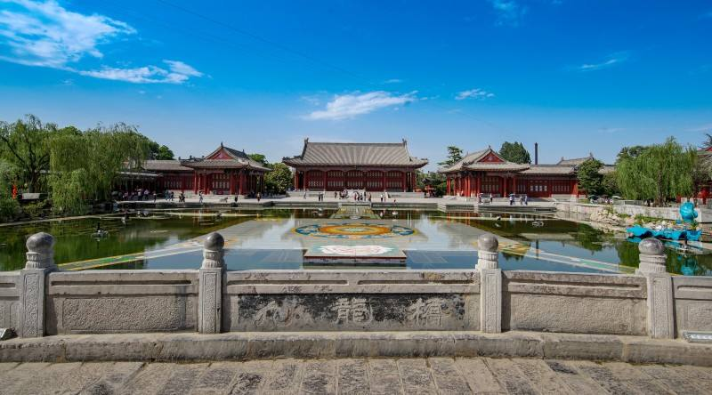
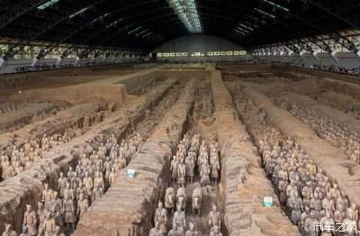

秦岭四宝
秦岭四宝是指生活在秦岭中的朱鹮、大熊猫、金丝猴和羚牛这四种珍稀动物。由于“秦岭四宝”主要生活在陕西的秦岭山脉中，所以陕西人将这四种珍稀国宝称之为秦岭四宝。

霸陵
在东郊白鹿塬上，系汉文帝刘恒之墓。陵南依凤凰山，北临灞水。墓前原有宋、元以后石碑43通，其中有清陕西巡抚毕沅题立的“汉文帝霸陵”石碑。西汉帝陵12座，10座皆在渭北咸阳塬上，惟文帝陵居南面白鹿塬畔。

大明宫遗址
位于城北1公里许的龙首塬上。始建于唐贞观八年（公元634年），称永安宫，系唐太宗为其父李渊兴建的夏宫。工程未完，李渊已死，后改名大明宫。宫殿东西1.5公里，南北2.5公里，凡11门。正门（南门）系丹凤门，正殿为含元殿，其北是宣政殿，左右列中书、门下两省及史馆、弘文馆。

华清池
位于临潼县城南骊山北麓，系陕西著名的温泉之一。早在公元前781～前771年周幽王在位期间，此地就发现了温泉，修有骊宫。相传秦始皇在骊山触怒神女，被唾一脸后发疮，始皇求恕，神女用温泉将其治好，因以石砌池，命名“神女汤”。

秦始皇兵马俑博物馆
位于临潼县城东7．5公里处的骊山北麓，西距秦始皇陵1．5公里，是中国规模最大的一座遗址博物馆。1974年在此发现陶俑并开始发掘，1975年筹建博物馆。1979年10月1日一号坑展览大厅落成开放，1989年9月三号坑展览大厅落成开放，1994年10月二号坑保护大厅建成开放。博物馆坐西面东，占地约19万平方米。